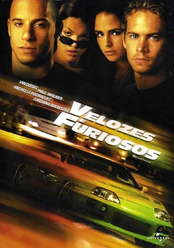

Home Próximo  Velozes e Furiosos (2001) Domenic Toretto é o líder de uma gangue de corridas de ruas em Los Angeles que está sendo investigado pela polícia por roubo de equipamentos eletrônicos. Para investigá-lo é enviado Brian Spindler, que se infiltra na gangue na intenção de descobrir se Toretto é realmente o autor dos crimes e se há alguém mais por trás deles. Gravado majoritariamente em Los Angeles, Velozes e Furiosos custou estimadamente US$ 38 milhões e foi lançado nos cinemas norte-americanos em 22 de junho de 2001, terminando por arrecadar US$ 207.283.925 mundialmente. A reação geral da crítica especializada foi mista, de acordo com os sites agregadores Rotten Tomatoes e Metacritic, embora tanto Diesel quanto Walker foram elogiados por seus papéis e tornaram-se nomes conhecidos, tanto nos Estados Unidos como no resto do mundo. O longa é o primeiro de uma franquia lucrativa de nove filmes e é distribuído pela Universal Pictures. Mais Velozes e Mais Furiosos (2003) Após deixar a polícia, Brian O'Conner é forçado a participar de uma nova missão. Ele se infiltra no crime organizado de Miami de forma a investigar sobre o transporte de dinheiro sujo para Carter Verone, chefe do tráfico local. Para tanto ele recebe a ajuda de seu ex-colega Roman Pearce e da agente secreta Monica Clemente. Mais Velozes Mais Furiosos ganhou US$ 50.472.480 em sua estréia nos EUA em 3.408 cinemas, ficando em primeiro lugar no fim de semana. Nos seus 133 dias de lançamento, o filme alcançou um pico de lançamento de 3.418 cinemas nos EUA e ganhou US$ 127.154.901 no mercado interno. O filme teve o 15º maior bruto doméstico de 2003 e o 16º maior bruto mundial de 2003; combinado com a receita bruta estrangeira de US$ 109.195.760, o filme faturou US$ 236.350.661. em todo o mundo. Velozes e Furiosos: Desafio em Tóquio (2006) Desafio em Tóquio é estrelado por Lucas Black, que interpreta Sean Boswell, um jovem de 17 anos obcecado por corridas de rua ilegais. A trama principal se passa em Tóquio, Japão, e envolve o submundo das corridas de drift japonesas. Sean Boswell é um adolescente superficial e infeliz, que usa as corridas de rua como válvula de escape. Seu envolvimento irresponsável nas corridas fez com que Sean tivesse problemas com a polícia anteriormente. Após bater com o carro, e como forma de evitar a prisão, Sean é enviado para Tóquio, onde passa a morar com seu pai. Em sua nova cidade Sean fica inteiramente deslocado até conhecer Twinkie, que lhe apresenta as corridas de drift. O drift é uma mistura de derrapagem e velocidade, que corre em circuitos bastante perigosos. Sean logo se empolga com a novidade, o que faz com que se envolva com os corredores locais. Velozes e Furiosos 4: Los Bandoleros (2009) Velozes e Furiosos 5: Operação Rio (2011) Velozes e Furiosos 4 (2009): Depois de ser visto rumo ao México no filme que deu origem a série, Dominic "Dom" Toretto reaparece na República Dominicana praticando seus golpes ao lado de sua namorada Letty e sua gangue. Com o FBI na sua cola, Dom decide fugir para não comprometer seus comparsas. Contudo, um assassinato cometido por um traficante de drogas acende nele uma sede de vingança que o faz cruzar novamente com o agente Brian O'Conner numa perigosa missão. Velozes e Furiosos 5: Operação Rio (2011): Dom e Brian firmaram uma parceria que os obrigou a fugir da polícia constantemente. Escondidos no Rio de Janeiro, eles têm mais uma missão a ser cumprida e, então, ganhar a desejada liberdade. No entando, a falha ou sucesso deste trabalho não segura a sede de sangue de um empresário corrupto, que deseja vê-los mortos. Nessa luta contra o empresário e em busca de suas liberdades, a dupla enfrenta o competente agente federal Lucas Hobbs, que está à caça de Dom e Brian com uma única arma: seu instinto, já que está cada vez mais difícil distinguir mocinhos e vilões. Ordem de Lançamento de Velozes e Furiosos Velozes e Furiosos (2001) Mais Velozes e Mais Furiosos (2003) Velozes e Furiosos: Desafio em Tóquio (2006) Velozes e Furiosos 4 (2009) Velozes e Furiosos 5: Operação Rio (2011) Velozes e Furiosos 6 (2013) Velozes e Furiosos 7 (2015) Velozes e Furiosos 8 (2017) Velozes e Furiosos: Hobbs & Shaw (2019) Velozes e Furiosos 9 (2021)